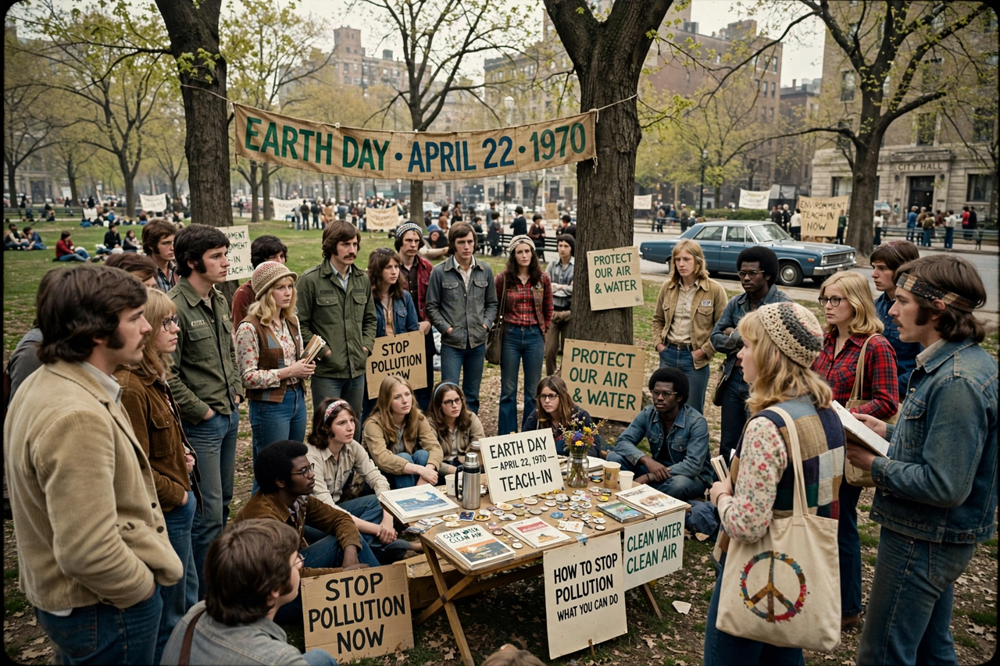

Environmental protection

Environmental protection is the practice of protecting the natural environment by individuals, organisations and governments, for the benefit of both the environment and humans. Its objectives include conserving natural resources and ecosystems, preventing pollution, and repairing damage already done.
Modern environmental protection emerged as a mass movement and a body of law in the 1960s and 1970s, though its roots lie in the 19th-century {L('Conservation_movement','conservation movement')}.
History and law
Rachel Carson's Silent Spring (1962) galvanised public concern about pesticides. The first Earth Day, 22 April 1970, mobilised millions in the United States, and the same era produced landmark legislation: the US National Environmental Policy Act (1970), Clean Air Act (1970) and Clean Water Act (1972), and the creation of the {L('United_States_Environmental_Protection_Agency','Environmental Protection Agency')}. The 1972 Stockholm Conference launched international environmental diplomacy and the UN Environment Programme.
Environmental law now spans pollution control, environmental impact assessment, waste and chemicals regulation, nature conservation and climate treaties.
Approaches
Protection operates at several levels: protected areas and species law for nature conservation; standards and permits that limit emissions from industry and vehicles; market instruments such as taxes and tradable permits; voluntary agreements and corporate standards; and education and public participation rights, including access to environmental information and courts.
International efforts address problems no country can solve alone: the ozone treaties (see Ozone depletion), the climate regime built on the Paris Agreement, and conventions on biodiversity, wetlands and hazardous waste.
Challenges
Implementation and enforcement gaps mean laws often outrun results. Many pressures — climate change, biodiversity loss, plastic and chemical pollution — continue to worsen globally, and environmental protection must be balanced against development needs in poorer countries, a tension formalised in the concept of sustainable development.
See also: Conservation movement · Environmentalism · Sustainability · Pollution · Rachel Carson